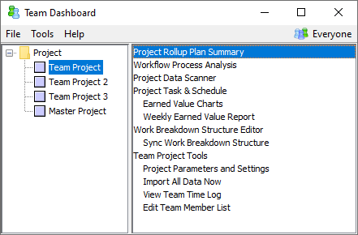
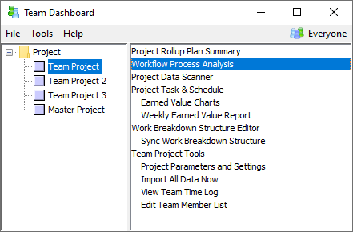

Workflows provide a powerful way for teams to define custom processes and use them in their work. The dashboard provides a number of reports that analyze workflow process data.
To view workflow data from a single project, select that project on the left side of the Team Dashboard window. Then click the Rollup Plan Summary option on the right.

The Rollup Plan Summary report will open in your web browser. When it does, click the "Workflow Summary" link from the report navigation pane. This will show a list of workflows that are in use by the current project. Choose a workflow to display planned and actual metrics for the corresponding components in this project.
By default, this report will include data from all components in the given project that use the selected workflow. For example, it will include data from components that have been planned but yet started. You can use the filtering tools at the top of the page to customize this behavior. To view "To Date" data from completed components only, see the next section.
Note: the "Workflow Summary" section was added in Process Dashboard version 2.5. If your team customized the Rollup Plan Summary using an earlier version of the dashboard, your customized report might not include a "Workflow Summary" section. In that case, you will need to edit the report again and add a "Workflow Summary" item.
To analyze "to date" data from various workflows, select the "Workflow Process Analysis" item from the list on the right side of the Team Dashboard window.

When the list of project workflows is displayed in your web browser, click the name of a particular workflow to see aggregate metrics.
The "Workflow Process Analysis" report rolls up data from all the WBS components that used this workflow and that are 100% complete. By default it will roll up all component data from all of the projects in the Team Dashboard, but you can click the Filter link at the top to customize this behavior.
The resulting report displays a number of charts and metrics, such as:
These metrics are extremely useful for ongoing quality monitoring, and for end-of-cycle postmortem analysis.
Historical data is extremely valuable for planning, tracking, and analysis. So when you view the Workflow Process Analysis report for a given project, the dashboard will pull in data from other projects if they include a workflow with the same name and steps. For example, if several of your project cycles all have a workflow named "SW Development," and those workflows contain steps with the same names as the current workflow, then data from all of these matching steps will be included in the calculations for the Workflow Process Analysis report.
But at times, this simple name-based matching is insufficient. For example, if your team changes the name of a workflow or alters the steps inside, the names will no longer match, and the historical data will not map forward anymore. Fortunately, you can resolve these issues by telling the dashboard how workflows map to each other.
To view or edit workflow mappings, open the Workflow Process Analysis report for the workflow you are interested in, then click the "Configuration..." link at the top of the page. On the configuration page, click the link to configure workflow mappings. This will open a page that shows mappings for the workflow in question.
The workflow of interest is shown at the top of the page. The brown boxes on the left below show other other workflows whose data is currently being included in the analysis. For symmetry, the blue boxes on the right show other workflows that include data from the current workflow. Click on any of these boxes, and you will see how the steps map from one workflow to another. To change these, click the "Edit Mappings" button at the bottom. If you wish to map data in the opposite direction as well, click the "Reverse Mappings" button and make changes as needed.
Workflow mappings are transitive: so if Workflow A maps to Workflow B, and Workflow B maps to Workflow C, then Worklow A data will automatically be included in analyses for Workflow C. When you add a new mapping between two previously unrelated workflows, the top-level mapping graph will automatically display any new transitive relationships.
After you have manually added or edited mappings, the workflow relationships shown on the top-level mapping graph will fall into two broad categories:
Since these relationships behave differently, it is important to be aware of the distinction. Accordingly, the top-level mapping graph will use thicker lines to indicate explicit mappings. If you edit a mapping between two workflows and need to change it later, take note of the thicker lines so you can make your follow-on edits to the same workflow pair you edited originally.
Here are some practical examples of how your team might use workflow mappings:
Process Evolution:
Similar Workflows:
Cross-cutting Analysis: